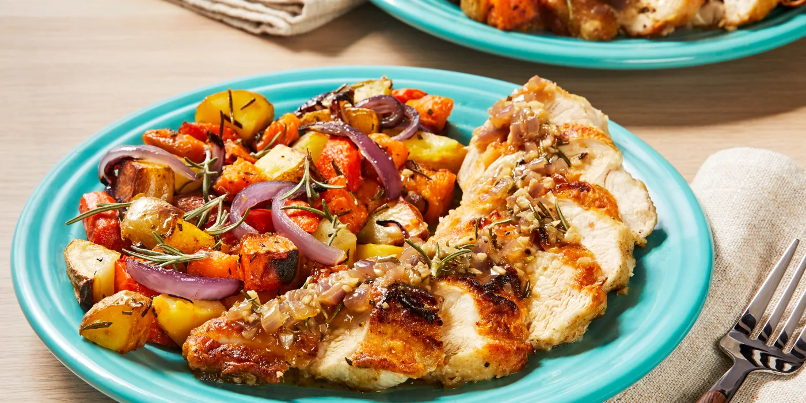
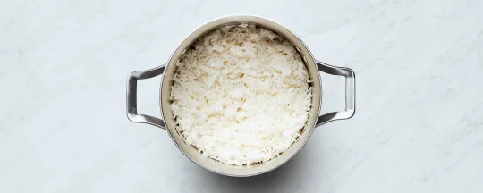
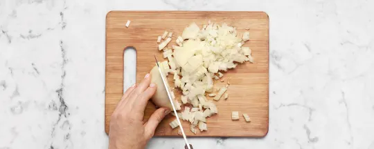
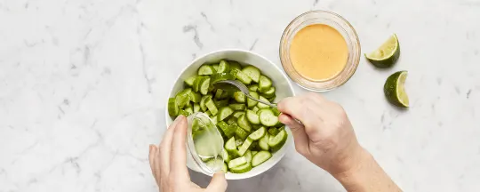
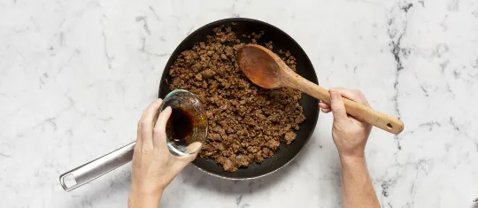
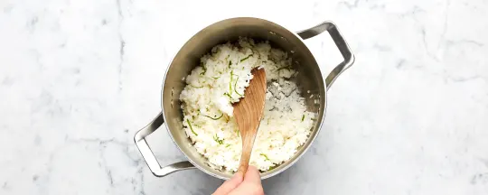

Garlic Rosmary Chicken

Description
Pan cooked chicken with oven rosted, rosemary seasoned, potatos, carrots and sweet potatos.
Ingredients
- Carrots
- Sweet Potatos
- Yukon Gold Potatos
- Rosemary
- Red Onion
- Chicken Breast
- Garlic
- Chicken Stock Concentrate
Steps

- PlacePlace rice in a fine-mesh sieve and rinse until water runs clear. Add to a small pot along with 1 cup water (2 cups for 4 servings)
and a pinch of salt. Bring to a boil, then cover and reduce heat to low. Cook until rice is tender, 15 minutes. Keep covered off heat for at
least 10 minutes or until ready to serve.

- While rice cooks, wash and dry all produce. Trim and halve cucumber lengthwise; thinly slice crosswise into half-moons. Zest and quarter lime
(for 4 servings, zest 1 lime and quarter both). Peel and finely chop garlic. Halve, peel, and cut onion into a medium dice. Trim, peel,
and grate carrot on the largest holes of a box grater.

- In a medium bowl, combine cucumber, juice from half the lime, ¼ tsp sugar (½ tsp for 4 servings), and a pinch of salt. In a small bowl,
combine mayonnaise, a pinch of garlic, a squeeze of lime juice, and as much sriracha as you’d like. Season with salt and pepper.

- Heat a drizzle of oil in a large pan over medium-high heat. Add onion; cook, stirring, until softened, 4-5 minutes. Add beef, remaining garlic,
and 2 tsp sugar (4 tsp for 4 servings). Cook, breaking up meat into pieces, until beef is browned and cooked through, 4-5 minutes. Stir in soy sauce.
Turn off heat; taste and season with salt and pepper.

- Fluff rice with a fork; stir in lime zest and 1 TBSP butter. Divide rice between bowls. Arrange beef, grated carrot, and pickled cucumber
(draining first) on top. Top with a squeeze of lime juice. Drizzle with sriracha mayo.